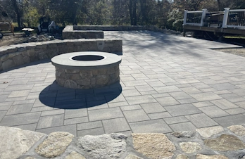

Hardscape Contractor in Stow, MA for Patios, Fire Pits & Retaining Walls
We transform outdoor spaces with top-quality hardscape designs. Our skilled team brings your ideas to life with expert craftsmanship and attention to detail.
Our Hardscape Services in Stow, Massachusetts: Create the Perfect Outdoor Living Space
Transform Your Landscape with Beautiful Hardscape Features
Custom Raised Garden Beds for Lush, Productive Gardens
Enhance your gardening experience with our custom-designed raised garden beds. These beds improve soil quality, promote better drainage, and are available in a variety of materials such as stone, brick, and wood. Perfect for growing vegetables, flowers, and herbs, these garden beds bring beauty and functionality to your landscape.
Tailored Patios and Walkways for Elegant Outdoor Spaces
Design a stylish outdoor living area with a custom patio or walkway. Choose from materials like natural stone, pavers, or brick to create a seamless transition between your indoor and outdoor spaces. Our designs are built to last while enhancing the beauty of your Stow home.
Sturdy Retaining Walls for Function and Aesthetic Appeal
Our retaining walls are both practical and beautiful. Built from high-quality materials such as stone, brick, or concrete block, these walls help manage elevation changes and can add visual interest to your landscape. Personalize them with integrated seating, planters, or lighting to enhance their function and style.
Outdoor Kitchens for the Ultimate Entertainment Experience
Take your outdoor gatherings to the next level with a custom outdoor kitchen. Whether you want a large countertop for dining or a fully-equipped grilling station, we’ll design an outdoor kitchen that blends seamlessly into your landscape and offers both beauty and convenience for entertaining guests.
Cozy Fire Features for Warm, Inviting Evenings
Enjoy the warmth of a custom-designed fire feature in your Stow backyard. From traditional wood-burning fire pits to modern gas fire features, we create the perfect focal point for your outdoor space. Gather around with friends and family for cozy evenings under the stars.
Relaxing Water Features for Tranquil Retreats
Enhance your landscape with a custom water feature, such as a fountain, pond, or waterfall. These calming features create a peaceful atmosphere, perfect for relaxing and unwinding. Whether large or small, water features add a serene touch to your Stow garden.
Durable Pool Decks and Plunge Pools for Relaxation and Fun
Transform your backyard into a luxury oasis with a custom pool deck or plunge pool. Crafted from materials like stone, concrete, or pavers, our designs provide durable, slip-resistant surfaces that are both functional and stylish, perfect for enjoying warm summer days in Stow.
Charming Pergolas and Gazebos for Shade and Style
Bring a touch of elegance to your outdoor space with a custom-built pergola or gazebo. These structures provide shade, style, and additional space for relaxation or dining. Personalize them with lighting or climbing plants to create a unique, inviting outdoor retreat.
Expert Outdoor Lighting to Enhance Safety and Ambiance
Illuminate your outdoor space with professional lighting designs that offer both safety and atmosphere. Whether you need pathway lighting or accent lights to highlight your landscape features, our lighting solutions create a beautiful evening ambiance while improving the safety of your yard.
Why Choose Our Hardscape Services in Stow, MA?
Experienced Professionals: Our team has years of experience designing and building custom hardscapes that enhance the beauty and functionality of your outdoor space.
High-Quality Materials: We use only the finest materials to ensure that your outdoor features are durable, low-maintenance, and visually stunning.
Personalized Designs: Every design is customized to fit your style, preferences, and the unique characteristics of your Stow property.
Local Expertise: We understand the climate and terrain of Stow, MA, which allows us to create hardscaping solutions that thrive in the local environment.
Materials We Use
Stone
Stone is a timeless material that brings durability and natural beauty to patios, walkways, and garden features. It’s perfect for creating low-maintenance, long-lasting outdoor spaces.
Brick
Brick adds sophistication and charm to any outdoor project. It’s ideal for creating elegant patios, walkways, and retaining walls that stand the test of time.
Pavers
Pavers offer endless design possibilities, with various colors and textures to choose from. They’re perfect for creating customized outdoor spaces such as patios, driveways, and walkways.
Gravel
Gravel is a cost-effective and versatile material for creating natural paths, driveways, or drainage solutions. It’s ideal for rustic and eco-friendly landscapes.
Concrete
Concrete is a durable and low-maintenance option for creating smooth or textured surfaces for patios, driveways, and walkways. It’s versatile, practical, and long-lasting.
Tile
Tile is perfect for pool decks and outdoor kitchens, offering a stylish and durable surface that can withstand outdoor conditions while adding a touch of elegance to your space.
Wood
Wood brings warmth and character to outdoor spaces. It’s ideal for building decks, pergolas, and other structures that create a cozy, natural atmosphere.
Composite Decking
Composite decking combines the look of wood with the durability and low-maintenance benefits of synthetic materials. It’s an eco-friendly choice for decks and pool areas.
Common Customer Concerns Addressed
Quality of Work
We take pride in our craftsmanship, using only the best materials and techniques to ensure that your hardscape project is both beautiful and durable.
Budget and Cost Transparency
We provide clear, upfront pricing and offer solutions that fit your budget without compromising on quality or design.
Project Timelines
Our team works efficiently and keeps you informed throughout the entire process to ensure your project stays on track and is completed on time.
Our Reputation
We have built a strong reputation for quality work and customer satisfaction in Stow, MA, and our commitment to excellence shows in every project we undertake.
Licensing and Insurance
We are fully licensed and insured, ensuring that your project is completed to the highest standards while complying with all local regulations.
Clear Communication
We prioritize communication with our clients, ensuring you’re always in the loop from consultation to completion.
Ready to Upgrade Your Outdoor Space?
Contact us today to discuss your hardscaping project in Stow, MA. Our team will work with you to design and build the perfect outdoor space that combines beauty, function, and durability.
Contact Us
Ready to transform your outdoor space in Stow, MA? Fill out the form below, and our expert team will reach out to you soon. The more details you provide about your project, the better we can assist you. We look forward to creating a beautiful and functional outdoor area for you!

Holliston, MACommercial project, made for entertaining.